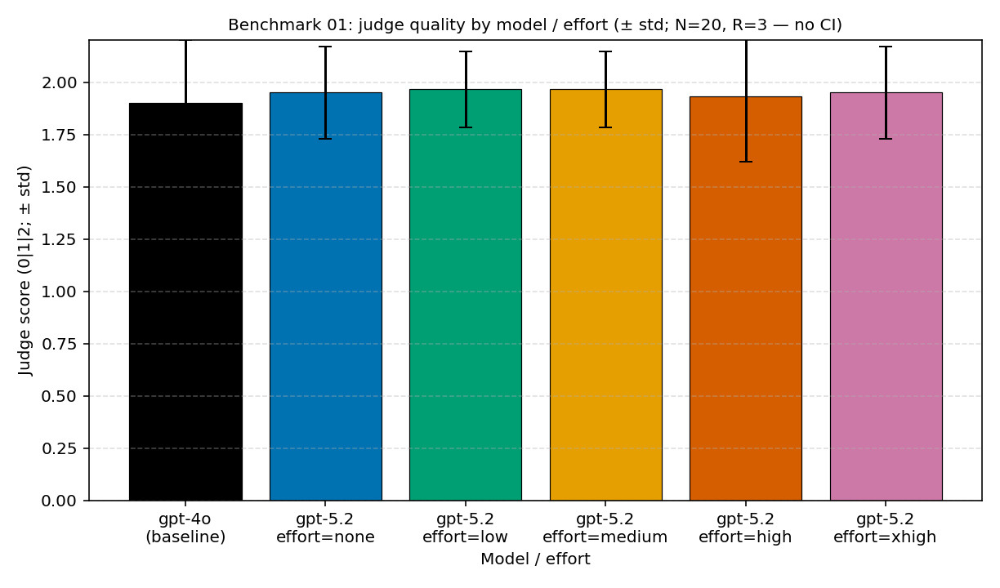

Experiment note · exp001 · short factual task (Null case) · वह floor जहाँ reasoning से फ़ायदा नहीं मिला
exp001 — क्या short-factual task में reasoning की ज़रूरत थी?
लेखक Hyeonsang Jeon · Global Black Belt, Cloud & AI Apps
हमने तीन benchmarks का floor पहले रखा। extraction·format·classification·transliteration·arithmetic — ऐसे short factual tasks जिनका उत्तर एक ही बार में निकलता है। यहाँ reasoning effort बढ़ाना “1 plus 1” के लिए meeting बुलाने जैसा है। Prediction सरल था: reasoning से लागत वसूल नहीं होगी।
इस note को पिछली दो entries से अलग करने वाली एक बात है। यह synthetic fixture नहीं, real measurement है। सभी 360 cells को Azure Foundry v1 पर सचमुच call किया गया, और neutral judge gpt-4o से प्रति cell एक बार 360/360 scoring हुई। "fixture": true marker कहीं नहीं है। इसलिए यह floor ‘plausible synthetic floor’ नहीं, measured floor है।
Measurement ने prediction को ज्यों का त्यों confirm किया — तीन benchmarks में केवल यही जगह थी जहाँ pre-registration बिना reversal के सही निकला। फिर भी real measurement ने दो details जोड़े। पहला, gpt-5.2 ने बिना कोई reasoning चालू किए none पर gpt-4o को quality में भी पीछे छोड़ा। दूसरा, effort को xhigh तक उठाने पर भी hidden reasoning tokens 0 के पास टिके रहे — effort dial किसी चीज़ से जुड़ा नहीं था। यह note उस floor को design → inputs → outputs → prediction versus measurement → failure pockets → decision के क्रम में दोबारा देखता है — ताकि अगला व्यक्ति इसी रास्ते में कम भटके।
पहले, 10 सेकंड
निष्कर्ष पर भरोसा न करें, केवल यह experiment खुद चलाएँ
Token consumption 0 है। नीचे की दो lines इस experiment के inputs·variables·outputs को जस का तस print करती हैं, और runner wiring को dry-run में verify करती हैं।
# इस experiment का inputs → variables → outputs card print करें (network नहीं)
python -c "import experiments; print(experiments.describe('exp001_short-factual_baseline.yaml').summary())"
# runner को dry-run में केवल wiring verify करें (token consumption 0)
python -c "import experiments; print(experiments.run('exp001_short-factual_baseline.yaml', dry_run=True, extra_args=['--max-samples','1']).ok)"Actual paid measurement और aggregate·chart regeneration commands benchmarks/01-short-factual/analysis.md के reproduction footer में हैं। इस note के सभी numbers उसी real aggregate (analysis.json) से re-cite हैं।
Design
सबसे सरल task से
जाँचने वाला प्रश्न एक तक समेट दिया। एक बार में उत्तर देने वाले short factual task — तीन benchmarks का सबसे आसान case — में, gpt-5.2 को सोचने की गुंजाइश (reasoning effort) जितनी ज़्यादा दें, क्या उत्तर उतने बेहतर होते हैं और उतनी लागत वसूल होती है? इसलिए देखने को भी दो ही चीज़ें हैं — effort बढ़ाने पर (1) quality बढ़ती है क्या, (2) cost बढ़ती है क्या। पैसे को दो नज़रियों से पढ़ते हैं: जितना उपयोग उतना भुगतान वाला PAYG पूछता है “प्रति सही उत्तर कितने dollar”, और पूरी capacity किराए पर लेने वाला PTU पूछता है “उसी capacity से प्रति minute कितने सही”। Expected answer “नहीं” था, और इस experiment की भूमिका उस “नहीं” के floor को अनुमान से नहीं, real measurement से pin करना है।
किससे मापते हैं — dataset. Frozen authored samples 20 (sf_01…sf_20), जिनमें extraction·format·classification·enumeration·transliteration·normalization·unit conversion·simple arithmetic·summary समान रूप से मिले हैं। ऐसे task में “एकमात्र सही उत्तर” को table में pin करना कठिन है। इसलिए answer key के बजाय केवल expected_output_shape(उत्तर का आकार) और quality_rubric_notes(scoring मानक) fixed रखते हैं, और quality तय करने के लिए neutral judge model gpt-4o हर उत्तर पढ़कर 0·1·2 अंक देता है। हर score का आधार भी raw material में ज्यों का त्यों रहता है।
बदलती केवल एक चीज़ है — gpt-5.2 के reasoning effort (reasoning.effort) को none(बंद) से low · medium · high · xhigh तक पाँच steps में बढ़ाते हैं। बाकी सब fixed। बगल में gpt-4o baseline रखते हैं, जिसमें reasoning dial है ही नहीं। इत्तफ़ाक़ छानने के लिए हर (sample × model × effort) cell को तीन बार (R=3) चलाते हैं।
Pre-registered prediction
Short factual task को reasoning surface की ज़रूरत नहीं। Quality सबसे कम effort पर ही saturated होगी, और effort बढ़ाने पर quality वैसी ही रहेगी जबकि cost·latency·tokens बढ़ेंगे। यानी उत्तर है “effort मत बढ़ाओ।”
इस experiment की भूमिका
तीन benchmarks का floor anchor। Multi-step (02) के ceiling और tool agent (03) के mixed case को मापने से पहले, “जहाँ reasoning सचमुच आवश्यक नहीं” उसका आकार real measurement से fix करना। बाद के experiments के reversals इसी floor से contrast में अर्थ पाते हैं।
Inputs और outputs
क्या खाया और क्या छोड़ा
इस experiment ने जो खाया और जो छोड़ा, वह हाथ से लिखी summary नहीं बल्कि repo की वास्तविक files हैं। इसलिए input से output तक एक line में trace किया जा सकता है।
Inputs (in)
Experiment definitions: experiments/exp001_short-factual_baseline.yaml, …_gpt4o.yaml.
Dataset: benchmarks/01-short-factual/dataset.json (SHA-256 से fixed).
Prompt: system prompt को SHA-256 fingerprint किया गया — यह guarantee करने के लिए कि 360 cells में एक ही prompt इस्तेमाल हुआ। Judge prompt SHA-256 भी हर scoring JSON में recorded है।
Outputs (out)
Raw calls: runs/*.json (Foundry v1 payload + usage/latency raw).
Scoring: judge_runs_real/*.json (real gpt-4o judge, प्रति cell 1 बार).
Aggregate: analysis.json (real cohort).
Charts/tables: results/cost-curves/benchmark-01-*.png·.csv.
Measurement surface 360 cells है (gpt-4o 60 + gpt-5.2 300, effort पाँच steps)। Outlier के रूप में excluded cells 0 — operational flags (cold start·retry·output truncation) के साथ 3σ से बाहर कोई row नहीं। Scoring neutral judge gpt-4o ने प्रति cell एक बार की, 360/360 success। सभी JSON real Azure Foundry v1 calls हैं; "fixture": true marker एक भी नहीं। Aggregate --experiment-prefix exp001_short-factual_baseline से केवल real cohort चुनकर regenerate हुआ, और दो बार चलाने पर bytes identical रहते हैं (deterministic aggregate)।
Prediction versus measurement
एकमात्र जगह जहाँ prediction ज्यों का त्यों सही था
क्या predict किया
Short factual task को reasoning नहीं चाहिए। Quality floor पर ही saturated होगी, और effort बढ़ाने पर quality वैसी ही रहकर cost बढ़ेगी। Summary: “effort मत बढ़ाओ।”
क्या निकला
ठीक वही — कोई reversal नहीं। Quality none पर ही saturated (accuracy 95%) थी और effort बढ़ाने पर 60 cases में केवल 1–2 cases की सीमा में हिली। Added detail: none ने gpt-4o को quality में भी हराया, और reasoning tokens xhigh पर भी 0 के पास रहे।
Decision: pre-registration confirmed. Multi-step (02) और tool (03) खोलते ही कहानी उलट गई (ceiling में none floor था, mixed में low floor), पर यह floor prediction जैसा ही रहा। इसलिए यह experiment series का control है — “जहाँ reasoning फ़ायदा नहीं देती” सचमुच कैसा दिखता है, यह measured anchor।
पहला signal
none ने पहले ही gpt-4o को हराया
नीचे की table के dollars pricing snapshot pricing/azure-openai-payg-2026-05.yaml (accessed 2026-05-19) पर methodology का PAYG formula लगाकर निकले values हैं, जिन्हें analysis.md §5 से re-cite किया गया है और per 1,000 normalized किया गया है। Accuracy judge score 2 (fully correct) का ratio है।
मॉडल प्रयास 1,000अनुरोध सही दर 1,000सही
gpt-4o — $0.665 90.0% (54/60) $0.739 ← baseline
gpt-5.2 none $0.587 95.0% (57/60) $0.618 ← default
gpt-5.2 low $0.589 96.7% (58/60) $0.609
gpt-5.2 medium $0.589 96.7% (58/60) $0.609
gpt-5.2 high $0.608 95.0% (57/60) $0.640
gpt-5.2 xhigh $0.598 95.0% (57/60) $0.629बिना reasoning चालू किए none दोनों axes पर gpt-4o से आगे है। प्रति 1,000 requests $0.587 पर यह gpt-4o ($0.665) से 12% सस्ता है, और accuracy उल्टे 95% versus 90% अधिक है। प्रति 1,000 correct answers में बदलें तो $0.618 versus $0.739 — 16% cheaper। यानी यहाँ value देने वाली चीज़ “effort बढ़ाना” नहीं, model बदलना ही थी। Effort dial ने अभी तक कुछ नहीं किया।
और none से ऊपर कुछ नहीं होता। low·medium की accuracy 96.7% पर एक पायदान ऊँची दिखती है, पर यह 60 में सिर्फ़ 1 case ज़्यादा है — sample इतना छोटा (N=20·R=3, confidence intervals नहीं) कि इसे noise मानना चाहिए। high तक बढ़ाओ तो cost उल्टे per request +3.6% चढ़ती है और accuracy 95% पर लौट आती है। आख़िरकार none से medium तक व्यवहार में एक ही सपाट plane है, और उसके ऊपर quality के बिना केवल cost जुड़ती है।
none (1.95) से xhigh (1.95) तक 1.9–1.97 के बीच लगभग बिना हिले सपाट है, और gpt-4o baseline (1.90) ठीक नीचे है। पूरी effort ladder में maximum quality gap केवल 0.07 points है। Source: results/cost-curves/benchmark-01-quality.png (real cohort).
Failure pockets
असफलताएँ कहाँ छिपी थीं
90% versus 95% जैसे दो aggregate numbers से यह नहीं दिखता कि फर्क “कहाँ” पड़ा। इसलिए हमने score को task type के हिसाब से तोड़ा। पता चला कि अधिकतर types में दोनों models full score (2.0) हैं, और फर्क केवल तीन जगह — extraction·summarization·arithmetic — में है। यही तीन इस experiment का केंद्र हैं।
प्रकार gpt-4o 5.2/none 5.2/low 5.2/high 5.2/xhigh
extraction 1.75 2.00 2.00 2.00 2.00
summarization 1.33 1.78 2.00 1.78 1.89
arith-trivial 2.00 1.83 1.67 1.67 1.67- Extraction — जहाँ gpt-5.2 ने floor पर gap भरा। gpt-4o ने 12 extraction cases में 1.75 पर कुछ छोड़ा, जबकि gpt-5.2 reasoning चालू किए बिना
noneसे ही 2.00 full score है। gpt-5.2 का 95% gpt-4o के 90% से आगे क्यों है, कारण यही है — reasoning नहीं, model itself extraction को अधिक stable करता है। - Summary — low पर peak, फिर पीछे। gpt-4o का सबसे कमजोर tag (1.33). gpt-5.2
none1.78 →low2.00 तक उठता है, फिरmedium·highपर 1.78–1.89 तक फिर नीचे आता है। Effort बढ़ाने से summary बेहतर नहीं होती। - Arithmetic — अकेली जगह जहाँ gpt-4o जीता, और effort का reverse effect. trivial arithmetic के 6 cases में gpt-4o 2.00 full score है, जबकि gpt-5.2
none1.83 सेlow·high·xhigh1.67 तक नीचे जाता है। Effort बढ़ने पर “1 plus 1” पर ज़्यादा सोचकर उल्टा चूकता है। Reasoning फ़ायदा नहीं देती, इतना ही नहीं; यहाँ वह negative value देती है।
तीन tags एक-दूसरे को offset करते हैं। gpt-5.2 extraction·summary में gpt-4o से कमाता है और arithmetic में थोड़ा खोता है, पर net none·low पर highest है। और किसी भी tag में effort बढ़ाने से gain नहीं मिला — यही वजह है कि यह benchmark “Null case” है।
दूसरा signal
effort बढ़ाने पर भी reasoning 0 रहती है
तो फिर effort बढ़ाने पर quality टस से मस क्यों नहीं होती? Tokens तोड़ने पर mechanical answer मिलता है। gpt-5.2 जो reasoning tokens परदे के पीछे खर्च करता है वे none·low·medium पर average 0.00, high पर 1.35, xhigh पर 0.62 हैं। यानी effort को maximum पर ले जाएँ तब भी model असल में “सोचने” पर जो tokens खर्च करता है वे 0 के पास ही हैं। Short factual task एक ही बार में हल हो जाता है, इसलिए plan करने या दोबारा देखने को कुछ है ही नहीं, और effort dial को जितना भी घुमाओ वह कहीं connected नहीं। यह उस multi-step task (02) का उलटा है, जहाँ reasoning tokens सचमुच effort के साथ बढ़ते थे।
Reasoning 0 है, तो cost भी उसी के साथ सपाट रहती है। Per-request input 224 tokens पर टिका है (prompt bytes identical), और visible output भी 10–16 tokens में मुश्किल से बढ़ता है। इसलिए effort-wise cost का फर्क भी बस none $0.587 से high $0.608 तक — प्रति 1,000 requests 2 cents से थोड़ा अधिक की हलचल भर है।
जवाब में लगने वाला समय (latency) भी effort का पीछा नहीं करता। gpt-4o 1,494ms, gpt-5.2 effort से लगभग स्वतंत्र 1,410–1,713ms के बीच noise की तरह बिखरा — medium तो none से भी तेज है। एक ही बार में जवाब देने वाले task में effort से speed का अनुमान नहीं लगता।
पूरी capacity किराए पर लेने वाले PTU lens में conclusion उलटता नहीं, बस थोड़ा झुकता है। gpt-5.2 none में per-request tokens gpt-4o से लगभग 1% अधिक हैं, इसलिए throughput 0.99 गुना (लगभग −1%) है — उसी fixed capacity पर प्रति minute correct answers में gpt-4o मामूली आगे है। यानी जितना उपयोग उतना भुगतान वाले PAYG में gpt-5.2 none साफ़ सस्ता है, और किराए वाले PTU में व्यवहार में tie। पिछले दो benchmarks की तरह PTU बड़ा gap नहीं दिखाता; दोनों models लगभग overlap करते हैं।
Transparency
numbers पर लगे धब्बे भी जस के तस
कोई measurement पूरी तरह साफ़ नहीं होता। यह benchmark जो निशान छोड़ता है, उन्हें मिटाए बिना लिखते हैं — क्योंकि छिपाने से अगला व्यक्ति उसी जगह चूकेगा।
- Real measurement replacement. यह floor पहले synthetic fixture (
exp008_short-factual_fixture) से प्रकाशित था। आकार plausible था, measurement नहीं। इस note के साथ वह जगह real cohort से बदली —analysis.json·charts·tables को--experiment-prefix exp001_short-factual_baselineसे regenerate किया। Fixture को हटाया नहीं; credential-free offline reproduction के stepping stone के रूप में repo में रखा, पर published numbers के source से बाहर किया। Fixture काminimaleffort वास्तविक deployment reject करता है, इसलिए real schema मेंnonefloor है। - Outliers 0. 360 cells में कहीं भी 3σ·operational flag से excluded row नहीं (methodology alert line 10% से बहुत नीचे)। Aggregate mask के बिना साफ़ surface।
- Deterministic answer key नहीं। इस dataset में rule comparison answer key नहीं, इसलिए quality judge score ही तय करता है। इसलिए “accuracy” judge score 2 (fully correct) का ratio बनाकर binarized है, और partial answer (1) denominator से निकाला गया। इस choice को स्पष्ट रखना headline calculation को visible बनाता है।
- Arithmetic reversal. gpt-5.2 जिस अकेले tag (arithmetic) में gpt-4o से हारा, उसे छिपाया नहीं; §failure pockets में जस का तस रखा — ताकि floor का conclusion “gpt-5.2 सब जीतता है” नहीं, बल्कि “effort फ़ायदा नहीं देता” रहे।
Limits
कहाँ तक भरोसा करें
यह result एक short factual task set, एक pricing snapshot, और एक specific model combination व rubric से निकला small aggregate है। Numbers से अधिक method को साथ ले जाना सुरक्षित है।
- Sample. N=20 · R=3. इस sample size पर confidence intervals या statistical significance claim नहीं करते —
none·low·mediumकी accuracy difference (60 में 1 case) को noise पढ़ना चाहिए। Directional conclusion (“effort फ़ायदा नहीं देता”) robust है, पर absolute size पर small-sample caution। - Scoring. LLM-as-judge (gpt-4o). Deterministic answer key नहीं, इसलिए quality पूरी तरह judge पर निर्भर है। Judge prompt SHA-256 scoring JSON में recorded है ताकि drift monitor हो, पर judge bias की संभावना रहती है।
- Pricing. Single snapshot. Rates या usage schema बदलें तो same raw material से cost फिर calculate करनी होगी।
- PTU. Throughput token-based estimate है, live PTU load test नहीं। इस floor में दोनों models का throughput लगभग 1% के भीतर overlap करता है, इसलिए PTU conclusion को विशेष सावधानी से पढ़ें।
तो default क्या रखें
Short factual task का default gpt-5.2 effort=none है। बिना reasoning चालू किए यह per request gpt-4o से 12% और per correct answer 16% सस्ता है, और accuracy उल्टे 95% versus 90% अधिक है। none से medium तक व्यवहार में एक plane है, इसलिए low·medium इस्तेमाल करना हानिकारक नहीं, पर extra gain sample noise में है। high और ऊपर reasoning tokens अब भी 0 के पास हैं और cost ही बढ़ती है, इसलिए उन्हें छोड़ते हैं। PTU lens में gpt-4o मामूली आगे है, व्यवहार में tie — value effort ने नहीं, model swap ने दी।
आगे जोड़ना
ताकि अगला व्यक्ति कम भटके
Evidence दर्ज करना numbers जमा करने पर खत्म नहीं होता। कौन सा question पूछा, कौन सा prompt और rubric इस्तेमाल किया, कौन सा pricing snapshot और sample आधार बना — यह सब बचना चाहिए, तभी अगला decision इसे फिर इस्तेमाल कर सकेगा। इसलिए यह note retrospective और timeline से वापस जुड़ता है।
- Retrospective body → प्रश्न-वार retrospective Q1 — क्या short-factual task को reasoning चाहिए? का core evidence यही experiment है।
- Timeline → “short-factual case measurement — floor को छूना” item इस experiment का anchor moment है।
- Paired experiment → exp002 — multi-step reasoning वह ceiling case है जहाँ “reasoning को जीतना था” फिर भी
nonefloor निकला। इस floor के साथ पढ़ने पर दिखता है कि दोनों single-shot tasks में effort dial क्यों खाली है। - Experiment card → inputs/variables/outputs की mechanical spec repo
experiments/README.mdकेexp001card में है।
Next experiment. यह floor deterministic answer key के बिना judge पर निर्भर है। अगला कदम rule-based verifier जोड़कर judge bias को cross-check करना, और real PTU load test से यह देखना है कि यहाँ का ~1% throughput gap live में भी overlap करता है या नहीं।
स्रोत · evidence boundary
स्रोत & evidence boundary
इस note के numbers synthetic नहीं, real measurement से आए हैं। वे कहाँ से आए और सीमा कहाँ तक है, नीचे जस का तस रखते हैं।
- इस experiment का analysis:
benchmarks/01-short-factual/analysis.md(§3 provenance, §4 token composition, §5 cost, §6 consumption model, §7 quality, §8 latency, §9 outliers, §10 conclusion). सभी figures यहीं से re-cite — real cohortexp001_short-factual_baseline. - Cross-summary:
results/summary.md. - Methodology:
docs/05-methodology.md(variables·sample·cache·scoring·cost·reproduction·statistical reporting protocol). - Pricing:
pricing/azure-openai-payg-2026-05.yaml(Azure, accessed 2026-05-19). - Boundary: N=20 · confidence intervals नहीं · single pricing snapshot · judge gpt-4o · deterministic answer key नहीं (quality केवल judge score) · PTU token-based estimate है (live load नहीं).